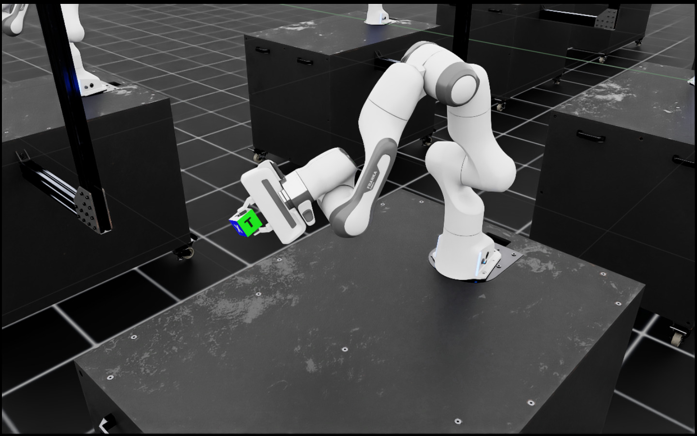

Isaac Lab Lift：条件门控，但没有显式阶段状态机

仿真任务场景固定 v2.3.0 / 3c6e67bb5c7ada942a6d1884ab69338f57596f77，任务 Isaac-Lift-Cube-Franka-v0。只核查源码与配置，未执行训练。源码
Franka 7维关节位置偏移（0.5 rad缩放）+1维夹爪二值开合；50 Hz控制、100 Hz物理。输入为关节、物体位置、目标物体位姿与上一动作，不含RGB和阶段one-hot；无单独critic观测组，采用runner的policy回退。源码 源码 源码
令 L=1[z_obj>0.04]、d_e=||p_obj-p_tcp||、d_g=||p_obj-p_goal||：
r=0.02 * [(1-tanh(d_e/0.1)) + 15L + 16L(1-tanh(d_g/0.3)) + 5L(1-tanh(d_g/0.05)) + w_a||Δa||² + w_v||qdot||²]。
两个惩罚权重从−0.0001变为−0.1：条件是共享 vector step counter >10000 且课程被调用，不能写成总计10000条并行样本。目标跟踪只在物体高度超过4cm后开启；接近奖励不会关闭。这是条件相加，不是押注阶段编号的FSM，也不是potential difference。源码 源码 源码 源码
验收边界：此RL配置没有“完整成功”布尔定义。 只有物体低于−5cm失败、5s超时；“lifted”是奖励指示函数，不能等价于抓稳、放置、释放、返回初态。初始化物体中心z=.055m也提醒我们：4cm是世界高度阈值，不是从初态向上移动4cm。源码 源码
PPO入口：./isaaclab.sh -p scripts/reinforcement_learning/rsl_rl/train.py --task Isaac-Lift-Cube-Franka-v0 --headless。4096env×24rollout×1500iterations=147,456,000配置样本上限；每批98304，4 minibatches（24576），5 epochs；lr1e−4 adaptive、KL.01、gamma.98、lambda.95、clip.2、entropy.006；双MLP256/128/64 ELU，观测不归一化，seed42。这是默认预算，不是实测达到成功所需步数。源码 源码 源码
可复用：由真实物体状态启用操作项，目标追踪使用粗/细两种距离尺度；应独立保留本项目按压、释放、撤回、停稳验收。潜在投机（推断）：若复制静态接近奖励到按压后仍启用，会与撤回形成竞争；这不是上游已复现的漏洞。